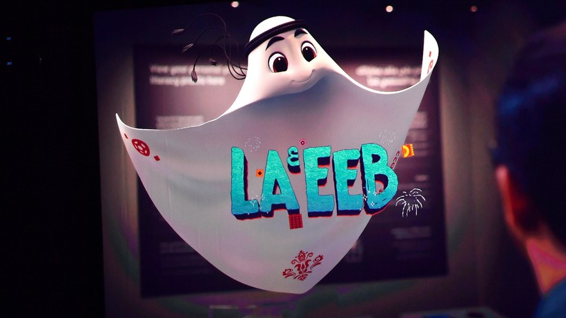

Rozpoczęcie mundialu:
XXII Mistrzostwa Świata w Piłce Nożnej 2022 odbędą się w Katarze w 2022 roku. Będzie to pierwszy turniej mistrzostw świata, który odbędzie się na Bliskim Wschodzie i pierwszy w kraju islamskim. To również pierwszy mundial, który zostanie rozegrany jesienią.
Finał mistrzostw globu zostanie rozegrany 18 grudnia 2022 roku na mogącym pomieścić 86 000 kibiców stadionie w Lusajl. Dzień wcześniej - 17 grudnia 2022 roku - rozegrany będzie mecz o brąz na stadionie Chalifa w Katarze (na 50 000 widzów). Sadio Mane, Virgil van Dijk, Harry Kane, Lionel Messi, Robert Lewandowski, Paul Pogba, Cesar Azpilicueta, Thomas Muller, Kevin De Bruyne, Luka Modrić, Neymar, czy Cristiano Ronaldo to tylko niektóre gwiazdy piłkarskie, jakie będzie można oglądać na mundialu w Katarze.
Al Rihla to 14. z kolei piłka, którą zaprojektował na potrzeby mundialu firma Adidas. W locie ma poruszać się szybciej niż jakakolwiek inna w historii tego turnieju. Piłka została wykonana ze specjalnie teksturowanego materiału, z użyciem farb i klejów na bazie wody. Całość jest inspirowana kulturą, architekturą i flagą Kataru. Odważne, żywe kolory na perłowym tle przedstawiają kraj-gospodarza. Zastosowane materiały mają zwiększyć stabilność i dokładność lotu piłki.
Organizatorzy piłkarskich mistrzostw świata w Katarze zaprezentowali oficjalną maskotkę imprezy. To postać w arabskim stroju o imieniu La'eeb, która ma utożsamiać cieszącego się grą zawodnika o wysokich umiejętnościach. Trudno jednoznacznie przetłumaczyć to słowo La'eeb. Organizatorzy turnieju zachęcają, aby każdy patrząc na maskotkę, zinterpretował ją na swój sposób. La'eeb zachęca wszystkich do wiary w siebie, jego nierozłącznym hasłem jest "Teraz jest wszystkim" (Now is all). Ma to właśnie przynieść wszystkim ludziom na świecie radość z futbolu.
Piosenka "Hayya Hayya (Better Together)" jest oficjalnym hymnem mistrzostw świata w Katarze. Utwór zaprezentowano podczas losowania grup mundialu. Piosenka zawiera elementy R&B i reggae. Artystami wykonującymi kawałek są Amerykanin Trinidad Cardona, Nigeryjczyk Davido oraz Katarka Aisha. "Hayya Hayya" jestt pierwszą z opublikowanych piosenek, składających się na oficjalną ścieżkę dźwiękową nadchodzącej imprezy. FIFA tym samym kontynuuje budowanie swojej strategii dźwiękowej ogłoszonej na początku 2021 roku. Jej głównym celem jest łączenie światowej publiczności poprzez wspólną pasję do piłki i muzyki.